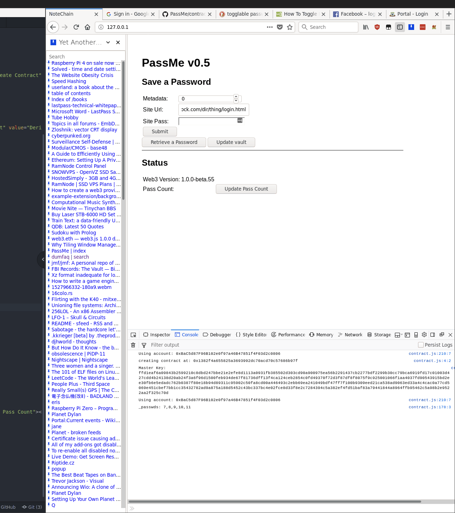

I’ve almost finished v5, all that’s left is to work out toggleable password fields in search results, and taking advantage of the MetaData field.
So far I haven’t discussed the reason why I kept this field from NoteChain, but the reason it was used there was to counterract the blockchain’s immutability; by setting metadata to 1 in the original contract, you marked that the note had been ‘deleted’.
For PassMe, I’ll retain the 1==deleted approach, but also since the project is still unreleased, I’d like to start using it to identify which version of PassMe wrote the note, e.g. for the current version of the PassMe contract (v0.3.5), I’ll set metadata to ‘0’.
Frontends that wanted to use different encryption models, for example, could use >1
Anyway, here’s a demo using the search function that I wrote

I’ve been having a lot of issues with the toggle buttons, since it’s important to be able
to address the created password elements by id (to use the
document.getElementById(...) method, in order to modify their contents via a function).
I kept recieving a document.getElementById(...) is undefined error, which I couldn’t
work out the root of, so I ended up sticking a lot of console.log() output statements
throughout the module in order to try and pin down why I couldn’t find the id. At the
time of writing, the issue still alludes me.
I’d also like to use icons to indicate the visibility toggle button, and I could use the common iconography of an open eye to indicate toggling the visibility to readable, and an eye with a line through it to indicate toggling visibility to hidden.
Common icons are available under the Apache open source license from Google’s Material Design project, as well as on wikicommons (i believe these are all public domain, although a citation is needed).
One issue with toggleable visibility is the actual hidden state of the text, since HTML paragraph elements don’t have a password display mode like inputs do, solutions to this could be to create an input that users couldn’t edit, or to roll-my-own function which converts text into ‘*’ characters, although then I’d also need to implement a data structure that could store the real password when it’s in its ‘hidden’ state.
Published: 2019-06-27